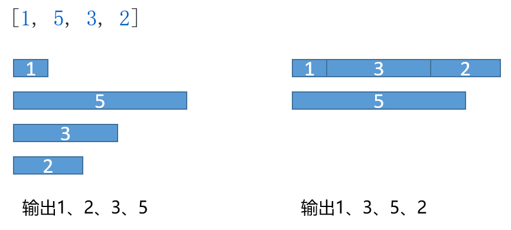
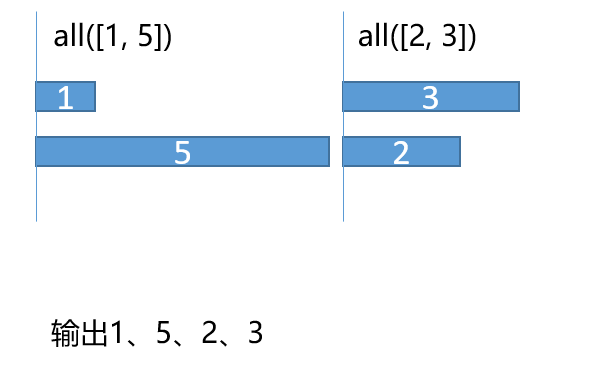

js异步初探 - 图解并发控制
前言
本篇起因源一个问题，Promise.all的限制并发数是多少？
这个可以通过 V8 的测试用例得知这个数字不超过 2097151：
1 | const a = new Array(2 ** 21 - 1); |
平时在社区中，我们也偶尔会看到这样一道题：
请实现如下函数，可以批量请求数据,所有的 url 地址在 urls 参数中，同时可以通过 max 参数控制请求的并发数，当所有请求结束之后，需要执行 callback 回调函数，发送请求的函数可以直接使用 fetch 即可
这道题我们发现，发送请求的函数使用 fetch 可知这是在在浏览器环境中；浏览器其实对同一域名的并发数量有所限制，比如 Chrome 就限制了 6 个，所以这里的 max 我们可以认为是不超过 10 个。解决这类限制我们可以通过多域名的形式优化。
以目前的网络环境，我们恨不得增加浏览器的单域名并发请求上限。这么看来这道题的实用性很小喽？
然而，在工作中遇到了一个这样问题，让我发现这题有它的应用场景。
发送邮件和IM消息需要调用三方提供的API接口，而这个接口分别限制了150/min和600/min的上限
假设我们不作限制，直接使用 promise.all 实例化所有的消息发起请求，假设接口请求返回时间是 1s 的话， 直接突破了 6 * 60 > 150 的限制导致后续的请求失效。
首先我们定制一个测试用例，限制并发数 limit 为 2
1 | const results = []; |
那么执行之后会有以下两个结果：
- 如果没有限制成功，得到的结果应该是
[100, 200, 300, 500] - 如果限制并发数成功，得到的结果应该是
[100, 300, 500, 200]
如图所示

尝试1. 失败的第一次
在 runkit 中运行
我们可以利用 Promise.all 配合 ES7 的 async 语法实现一个简单的并发限制
1 | async function main() { |
执行得到的结果是 Array(4) [100, 500, 200, 300]，和我们前面提到的不符鸭，画个图康康

很显然，这个是不符合我们要求的；我们不可能等到这两个通道里最晚的执行完毕后再发起下一波请求。
尝试2. 限制通道数
既然我们需要在 100 执行完后立刻放入下一个 500，我们就需要抛弃这个 Promise.all 来进行一次尝试了
这里我们可以假想有 2 个通道，开始时我们先填满这 2 个通道，然后我们对其中运行的 1 和 5 注册一个回调函数，它可以做以下两件事：
- 如果发现待执行的队列还有需要执行的，把它放入队列（如
1执行完后就应当把3放入） - 如果发现执行完毕（此处应该有一个计数，统计当前已经请求完毕），那么不再取出数据并且决议完成（或者执行完成后的回调）
1 | function limitRun() { |
通过这样的方式，我们第一次得到了正确答案。简单的抽象一下，我们就可以得到一个工具函数。
尝试3. 第一次抽象
1 | /** |
尝试4. 进一步优化
其实到了上一步，已经满足了我们的需求。我们可以更进一步，把递归优化成迭代的形式。
这一步的工作是为了方便我们更进一步，可以更方便的去管理异步队列，抽象为一个个池子单独运行。
1 | class LimitPool { |
此条参考的是 limit-promise
后续按照下载量排名讲解几个社区内的并发控制库
读三方库
接下来解读俩个社区内的并发控制库
1. tiny-async-pool
第一个库如名字所示，突出一个小巧。它有两种版本的实现。
ES7版本
该版本使用 Promise.all 和 Promise.race 组合进行实现，单纯的使用 Promise.all 的结果已经在上文中展现了，无法满足我们的需求。
此处使用 Promise.all 的作用仅仅是提取结果，阻塞后续请求的底层能力是由 for of loop + async function 语法糖中调用的 Generator 作为协程提供的。
这里值得注意的是两次调用 .then ，是会返回的不同的promise对象参考。
以下是 ES7 版本的解读1
2
3
4
5
6
7
8
9
10
11
12
13
14
15
16
17
18
19
20
21
22
23
24
25
26
27async function asyncPool(poolLimit, array, iteratorFn) {
// 存储结果队列
const ret = [];
// 存储执行队列，该队列长度不会超过 poolLimit 的大小
const executing = [];
for (const item of array) {
// 实例化，如果有请求则在此处进行
const p = Promise.resolve().then(() => iteratorFn(item, array));
// 将注册 iteratorFn 回调的 Promise 放入结果队列
ret.push(p);
// 新的 Promise 对象，执行后会将自己从执行队列中剔除
const e = p.then(() => executing.splice(executing.indexOf(e), 1));
// 加入执行队列
executing.push(e);
// 如果执行队列已满
if (executing.length >= poolLimit) {
// 协程阻塞，直到一个任务（请求）成功或者失败
// 再执行下一轮 for of
await Promise.race(executing);
}
}
// 类似于 Monad 中将 Unit :: a -> monad a 的 a 取出
// 通过 Promise.all 将结果数组 ret 中的 Promise 结果提取
return Promise.all(ret);
}
ES6版本
在理解了上述 ES7 的版本之后，我们看ES6的版本会轻松很多；
核心的两个数组 ret 和 executing 的用处已经在上面解释过了
下面仅注释与上文不同的地方：
1 | function asyncPool(poolLimit, array, iteratorFn) { |
2. p-limit
这是个周下载快 3 千万的库 🤔 (携带了 p- 一家子)，在读这个库之前我们先过一下前置知识。
平时我们使用的 Promise ES 版本提供了这么些个实例方法给我们折腾：
Promise.allPromise.allSetteld(还没普及，babel 一下又不是不能用)Promise.racePromise.any对比race它返回第一个resolve的值 (支持度比allSetteld还低，babel 一下又不是不能用)
可是在这个 p-limit 中调用了一个 p-try 的包（警觉。
看完了挂在 README 的这篇 What is Promise.try, and why does it matter? ，文章表达了以下几个 Promise.try 所带来的好处，详情可以进去see一下：
- 更好地错误处理： 通过它可以把同步错误转为异步错误，统一处理避免一堆
try..catch - 更好地交互： 不管你用的是哪种 Promise (p, bluebird…) 都可以转变为你目前用的
Promise来执行调用链 - 更好地see： 这个见仁见智，我觉得问题不大 🐶
整了这么多高大上的我以为会看到又一份精妙代码，然后啃读，结果就一行整完了：
1 | const promiseTry = (func, ...arguments_) => new Promise(resolve => resolve(func, ...arguments_)) |
接下来开始研读 p-limit： 首先从 API 入手，我们发现它先调用了 pLimit(concurrency) 限定了同时请求数目；这个和上文 尝试4. 进一步优化 的 limit-promise 有点相似，此处没有实例化对象，返回了一个闭包
1 | const pLimit = concurrency => { |
总结
本文从一道模仿HTTP并发请求和工作中的问题出发，简述了JS异步并发控制的方法，并对社区中几个常见库进行解读，希望可以带来不一样的思考，如果大家有不同的想法可以在评论区讨论交流。